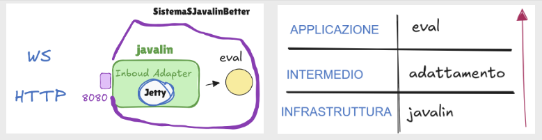

Introduction
Goal: Realizzazione in Java del seguente
servizio di
valutazione di espressioni matematiche.
Requirements
Il committente fissa i seguenti requisiti:
- realizzare un servizio Java che calcoli i valori dell'espressione sin(x) + cos(√3 * x)
- utilizzare il javalin server per abilitare la ricezione di messaggi via WebSocket, ma anche HTTP/1 e
HTTP2
- all'utente verrà presentata una pagina html che gli permetta di specificare la x per cui si vuole
ottenere il risulato e la modalità di interazione (WebSocket, Get o Post)
- il deployment dell'applicazione deve avvenire mediante Docker
Requirement analysis
Ragionando sui requisiti forniti, risulterà necessario avere:
- una funzione eval che prenda in input un numero reale x e restituisca il risultato della valutazione
della funzione desiderata
- un server javalin per la gestione del flusso di messaggi in arrivo da e verso il componente realizzato
Problem analysis
Come primo passo, si definirà l'architettura del sistema. In accordo ai principi delle Clean
Architecture e in modo dunque da evitare che la scelta del framework da utilizzare influenzi il
dominio, il sistema verrà strutturato a livelli:

- livello di infrastruttura: qui opera javalin, gestendo i protocolli e prelevando dai messaggi le
informazioni rilevanti per il livello di dominio;
- livello di adattamento: è il livello intermedio che trasforma i dati di basso livello forniti
dall'infrastruttura nei dati richiesti dall'applicazione;
- livello di dominio: la funzione eval vista prima definisce la business logic del sistema,
indipendente da javalin e protocolli vari.
Vi sarà inoltre una pagina
html con relativo file
di scripting javascript l'interazione con l'utente.
Test plans
Project
Testing
Deployment
Avviene tramite piattaforma Docker grazie ai seguenti file:
Maintenance